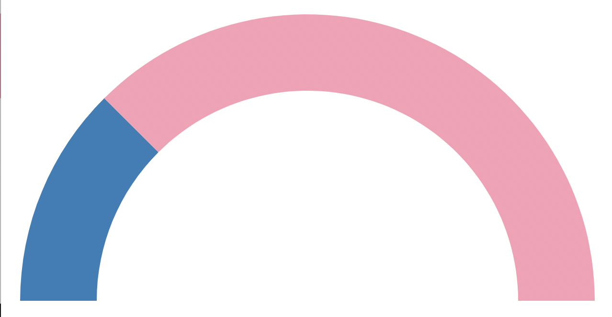

Introduction

An arc graph is a visual display of an information using a half ring shape. An arc graph can be used to
represent a proportion in a data.
For example, the arc graph above shows a proportion of 1/4 or (25%) where 25%
for the graphics is colored in blue, while the rest is kept pink.
Proportions and percentages are also used to describe chances. For example, there is 25% of chance of
raining tomorrow. However, people usually use expressions like "likely", "probably"
when they talk about probabilities and chances.For example, "It will likely rain tomorrow", "There is only a
little chance that I'll travel to Paris again" etc...
In this study, we are interested in the words and expressions that people use to describe
probabilities shown in a data visualization like an arc graph.
For this experiment, imagine yourself participating in a game in which you pick a marble out of hat full of
colored marbles. Some marbles are pink, and the other marbles are blue. There are two outcomes in this game:
- if you draw a blue marble, you win,
- but if you draw a pink marble, you lose.
In the arc graph provided above, the blue section of the graph represents the proportion of blue
marbles in the hat. A quarter of the total number of marbles in the hat is blue.
In general, the bigger the
portion of blue arc is, the more blue marbles there are in the set and your chance of picking one will vary
accordingly.
Your task: For each question in this questionnaire, observe the visualization and describe
your chance of picking a blue marble and winning the game.
Do NOT use numerical answer like "The chance of drawing a blue marble is 25%". Instead, use
familiar probability words and expressions to describe and communicate your chances.
Since this is a scientific experiment, your answers could be rejected if they do not follow these instructions